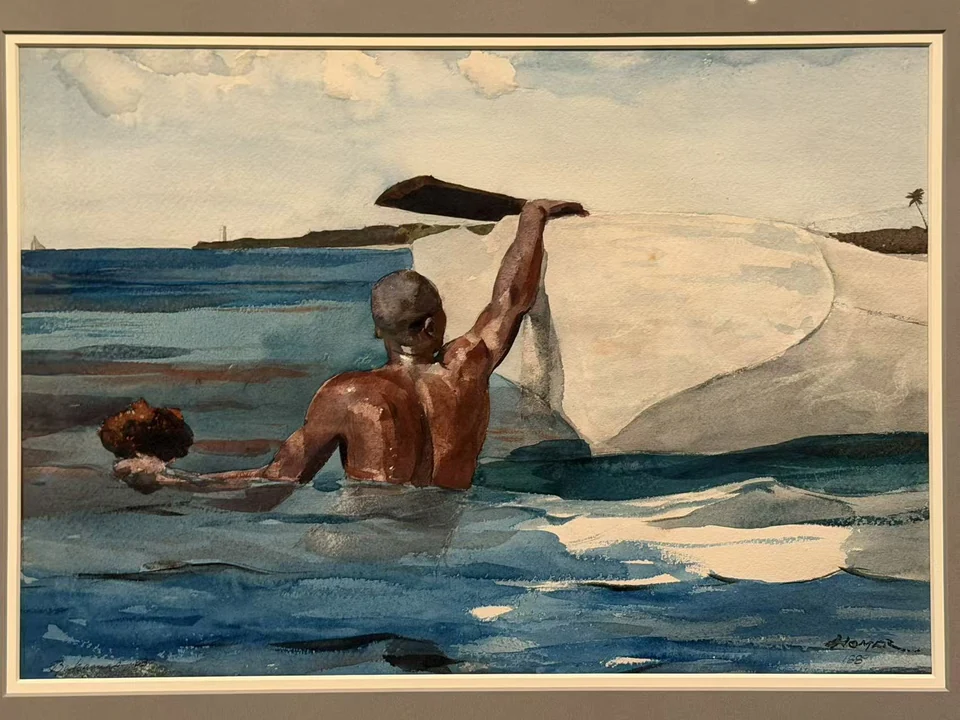
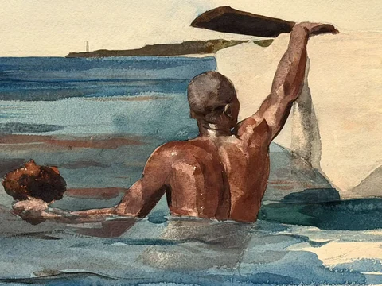

WINSLOW HOMER / LOOK CLOSER
采海绵的潜水者
The Sponge Diver

- 作者／制作者
- 温斯洛·霍默（Winslow Homer）
- 年代
- 1898–99
- 媒介
- 石墨底稿上施水彩
- 展签原文
- Watercolor over graphite
- 收藏
- 波士顿美术馆
- 编号
- 39.621
- 观看地点
- 休斯顿美术馆 · Of Light and Air
- 入藏来源
- Robert B. Osgood夫人赠，1939
在画前
男人的背部露出水面，一臂举起扶住船边，另一只手托着海绵。身后的白船与肩背的棕色相互衬托，水面又把两者的颜色拆成横向碎片。光落在肌肉、木船和波纹上，触感各不相同；这份美感始终与劳动的动作连在一起。
现场说明把作品放在霍默第二次巴哈马之行描绘黑人劳动者的系列里，也提醒观众注意白人画家的观看与当地种族、阶级差距之间的关系。于是这片蓝水并不只是度假风景。潜水者要从水下采集海绵，画面里的身体也属于实际维生的工作。
作品信息与文中展签说明据现场展签 ↗。
走近看局部
